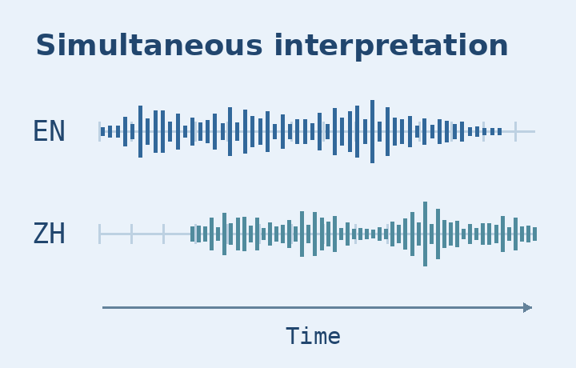
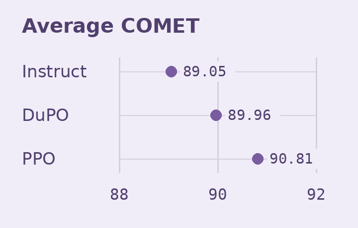

About me
I’m a Senior Principal Engineer on the Seed Model team at ByteDance in Singapore. My work spans multilingual language models, simultaneous speech interpretation, and video translation.
I led Seed LiveInterpret 2.0, a speech-to-speech model that interprets between English and Chinese in the speaker’s own voice, and Seed-X, a family of open-weight translation models covering 28 languages.
Previously, I led ByteDance’s Cross Language Agent team. Our VolcTrans platform provided machine translation for TikTok, CapCut, and Lark. I also led teams that achieved the top BLEU score in WMT news translation for Chinese to English in 2017, all five directions we entered in 2018, and German to English in 2021.
Publications
Full list on Google Scholar2026
-
ACL
Improving Long-Context Translation via Self-Supervised Dual Learning
LongDu trains on monolingual documents. It favors translations that retain enough information to reconstruct the original document.

2025
-
arXiv preprint
Seed LiveInterpret 2.0: End-to-end Simultaneous Speech-to-speech Translation with Your Voice
A duplex model interprets between English and Chinese while preserving each speaker’s voice, with an average delay of about three seconds in our evaluation.

-
arXiv preprint
Seed-X: Building Strong Multilingual Translation LLM with 7B Parameters
A family of open-weight 7B models for translation across 28 languages, including instruction-tuned and reasoning variants.

2024
-
arXiv preprint
Towards Achieving Human Parity on End-to-end Simultaneous Speech Translation via LLM Agent
CLASI learns when to listen and when to translate. It retrieves domain terminology to interpret specialized speech.

2023
2022
2016
Academic Service
Area Chair
IJCNLP-AACL 2023 · NLP Applications track
Conference reviewing
Program committee member
ACL Rolling Review
Reviewer for the January and December 2022 cycles and the May 2025 cycle. Reviewer roster